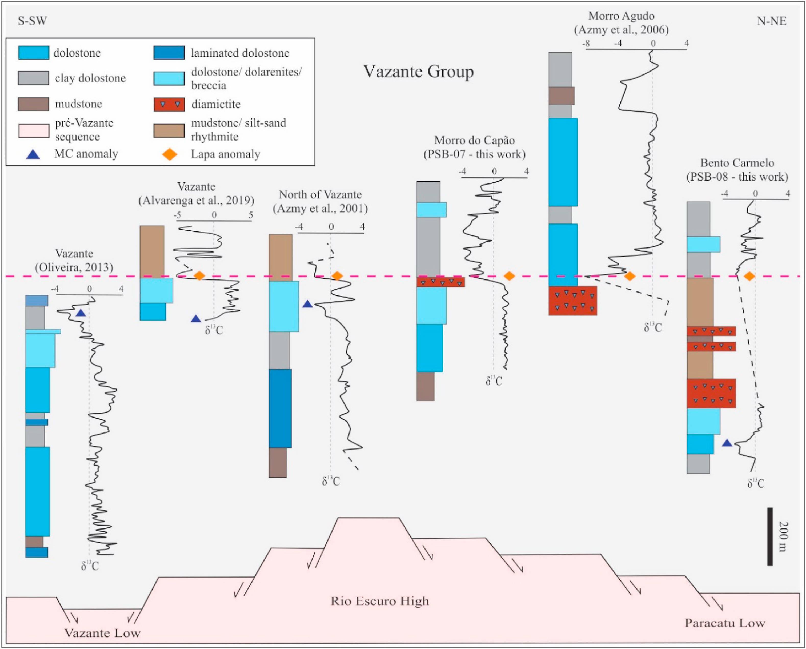

Isotope Stratigraphy of the uppermost Vazant Group, Brazil: Insights on paleoenvironments and regional correlation

Resumo em Português
As rochas do Grupo Vazante na região de Morro Agudo (SE do Brasil) integram uma espessa sequência argiloso-carbonática composta por doze fácies sedimentares e quatro associações de fácies (AFs), depositadas em um ambiente misto de margem passiva marinha. Este trabalho realizou análises sistemáticas de isótopos de δ¹³C e δ¹⁸O nas duas unidades estratigráficas superiores do Grupo Vazante (Formações Morro do Calcário e Serra da Lapa) e na Formação Serra do Landim. Apesar da dolomitização secundária pervasiva e da sobreposição hidrotermal, a maioria das amostras pode ser classificada como dolomito menos alterado, com algumas exceções. Os perfis isotópicos e a análise de fácies mostram que a Formação Morro do Calcário apresenta valores homogêneos de δ¹³C, enquanto a Formação Serra da Lapa exibe valores negativos de δ¹³C na base, inflectindo-se em direção a valores positivos para o topo. Esses dados acoplados sugerem uma mudança significativa de ambiente no contexto deposicional entre essas duas formações, passando de condições mais calmas e estáveis (Morro do Calcário) para condições energéticas e perturbadas (Serra da Lapa). Os fortes valores negativos de δ¹³C — denominados anomalia Lapa — estão associados a fácies de diamictito abaixo de espessa camada de carbonatos, sugerindo a influência do evento glacial Sturtiano na porção inferior da Formação Serra da Lapa. A anomalia Lapa é o melhor marcador quimioestratigráfico ao longo da sequência e orienta a correlação regional do Grupo Vazante. Os diamictitos basais da Formação Serra da Lapa incluem fragmentos dolomíticos de fácies Morro do Calcário, indicando fonte intrabasinal. Com base na correlação dos perfis isotópicos, infere-se que as unidades superiores (Formações Morro do Calcário e Serra da Lapa) das porções norte e sul do Grupo Vazante foram depositadas na mesma bacia, ou em bacias conectadas, possivelmente separadas, em parte, pelo alto do embasamento Rio Escuro.